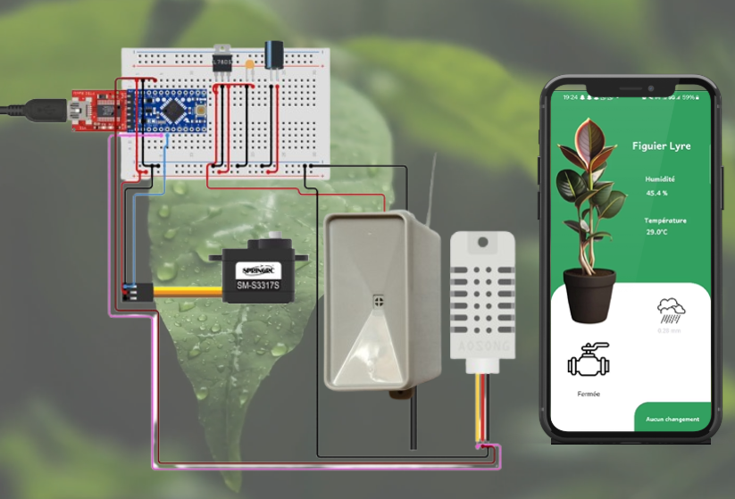
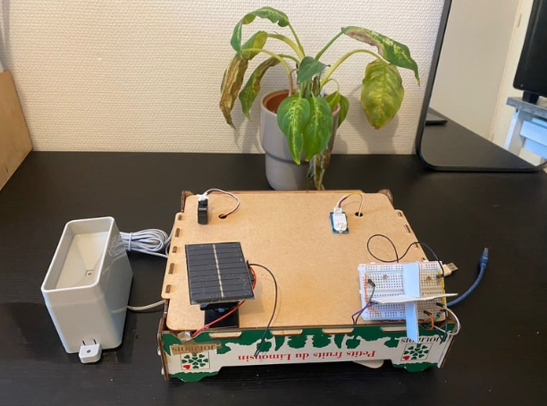

Software Engineer · Embedded Systems · Problem Solver
Building thoughtful digital experiences at the intersection of craft and code.
"The walls between art and engineering exist only in our minds, and few go beyond them" - Theo Jansen
Hi, I'm Eya, a software engineer with a passion for building reliable and efficient systems. I enjoy working close to the core of technology, from embedded and real-time programming to tools that help complex systems operate safely and predictably.
With a background in digital engineering and experience in the aerospace domain, I have contributed to the development of flight calculators while working with the flight control team for Airbus at Sopra Steria. This experience strengthened my skills in C, Ada, and Python, and deepened my interest in software used to support the testing, analysis, and performance of complex aerospace systems.
I believe good software is built with clarity, precision, and purpose. Whether it's optimizing performance, designing clean architectures, or understanding how software interacts with hardware, I enjoy solving problems where both engineering rigor and creativity matter.
Contributed to the development and maintenance of DAL-A critical flight control software for Airbus flight computers, implementing Design Change Requests in C and Assembly, performing validation and functional testing in Ada, and supporting DO-178B certification activities within a certified aerospace environment.
Development of a cooperative IoT platform for connected vehicles, enabling real-time data collection, object classification, and traffic prediction to improve road safety using machine learning and embedded systems.
Supported the CEO in the development of innovative R&D projects focused on Alzheimer’s disease research, contributing to project coordination, recruitment efforts, and the identification of funding and investment opportunities within an international multidisciplinary environment.
Contributed to the systems engineering activities of a student CubeSat project, supporting system architecture definition, requirements analysis, and traceability management across satellite subsystems.
Designed and developed a responsive website and contributed to communication and partnership initiatives for a student CubeSat project through content creation and outreach activities.
Collaborated with N7Consulting to create a website for ÔToulouse, designing and developing a WordPress site that fully met client UX/UI and design requirements, using Figma for prototyping and ensuring intuitive, visually appealing user experiences.
Engineering degree in Computer Science and Applied Mathematics with a specialization in embedded and critical systems. Coursework included real-time operating systems, real-time scheduling, concurrent and distributed systems, microprocessor architectures, and system dependability.
Intensive preparatory program for French Grandes Écoles, ranking among the top national candidates in competitive entrance exams while developing strong foundations in linear algebra, physics, and scientific computing.


Designed and built an Arduino-based smart irrigation system that monitors plant health using soil temperature, humidity, and rain sensors. The system references a plant database to determine optimal watering schedules, automatically activates a water pump when needed, and is powered by a solar panel with sun-tracking capability for energy autonomy.
View DemoWhether you have a project in mind, a role to fill, or just want to say hello — my inbox is always open. I'll do my best to get back to you promptly.